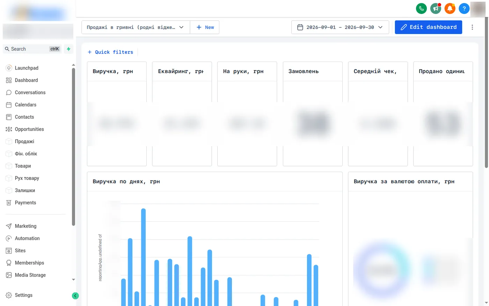

Sales, finance and inventory dashboard for an apparel brand inside a white-label GHL platform
- Problem
- An apparel brand sells through a WooCommerce store in several currencies. Orders reached the CRM, but the owner had no trustworthy revenue in local currency, no view of sales by channel or country, and distributor stock was tracked by hand. The CRM's own payment records also disagreed with the store on statuses and refunds.
- What I built
- A Cloudflare Worker with a D1 database that syncs orders every 15 minutes from the CRM and the WooCommerce REST API. The store is the source of truth for status, payment, refunds and country.
- Each order converted to local currency at the central-bank rate on the payment date; acquiring fees and shipping kept as separate fields, so revenue equals the sum of line items.
- GHL custom objects (Sales, Finance ledger, Products, Stock movements) linked to contacts and companies, plus customer metrics written to the contact: total spent, average order, frequency, VIP / Sleeping status.
- Native GHL dashboards and an embedded dashboard page with tabs and cascading filters (product, country, currency, acquisition channel from store attribution).
- A distributor module: shipments, returns, stock counts and payments, with printable PDF waybills generated on the Worker.
- Stack
- GHL API v2
- Custom objects & associations
- WooCommerce REST
- Cloudflare Workers
- D1
- Cron triggers
- ECharts
- node:test
- Result
- In production since September 2026, full order history backfilled.
- Every figure audited against the store's order cards; mismatches between the CRM and the store are listed instead of silently mixed.
- Since mid-October the stock in the CRM mirrors the website; writing stock back to the store is built and waits behind a feature flag.
